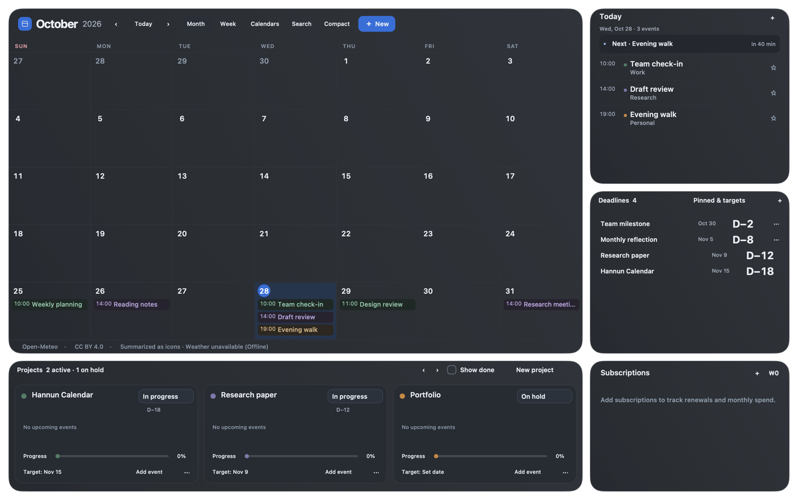

쓰던 캘린더를 그대로
macOS에 등록한 iCloud, Google, Exchange 캘린더를 연결합니다. 계정 인증과 동기화는 macOS가 관리해요.
연결에는 캘린더 전체 접근 권한이 필요합니다.
MAC용 캘린더 보드

캘린더와 패널
위 예시 화면에서 달력과 함께 보이는 정보입니다.
패널 구성
아홉 가지 패널 중 필요한 것을 골라요.
빈 배경을 길게 눌러 편집하고,
달력과 패널을 옮기거나 크기를 조절하세요.
편집 중 패널 제목에서 구성을 바꿔요.
패널 선택과 배치는 이 Mac에 저장됩니다.
오늘과 다음 일정
다가오는 날짜와 D-Day
진행률과 목표일
간단한 메모
직접 적고 살펴보는 다음 결제일
할 일과 완료 상태
매일의 체크와 연속 기록
서로 다른 도시의 지금
집중과 휴식 시간
Mac에서 사용하기
macOS에 등록한 iCloud, Google, Exchange 캘린더를 연결합니다. 계정 인증과 동기화는 macOS가 관리해요.
연결에는 캘린더 전체 접근 권한이 필요합니다.
메모, 프로젝트, 패널 배치는 로컬에 저장됩니다. 앱 자체 서버와 분석 도구는 없고, 별도 계정을 만들 필요도 없어요.
보드 데이터는 암호화되지 않은 로컬 파일입니다.
고른 도시의 날씨를 날짜 곁에, 외화 구독은 원화 합계로. 설정에서 외부 조회를 끌 수 있고, 나머지 보드는 계속 쓸 수 있어요.
도시 좌표·통화 코드와 연결 정보가 제공업체로 전송됩니다.
날씨: Open-Meteo · CC BY 4.0 · 아이콘으로 요약 · 무료 서비스는 비상업용. 환율: Frankfurter · ECB 데이터. 제공업체 이용 조건은 앱의 MIT 라이선스와 별개입니다.
다운로드
Mac용 초기 베타를 받아보세요.
초기 베타 v1.0.0-beta.3
Mac용 다운로드 .dmgmacOS 14 이상 · Apple Silicon (M 시리즈)
앱과 DMG의 Developer ID 서명·Apple 공증·티켓 첨부를 완료했습니다. ZIP에도 같은 티켓 첨부 앱이 들어 있습니다. 초기 베타의 기능·권한 관련 제한은 릴리스 노트를 확인하세요.
설치와 사용
설치와 베타 사용에 관한 안내입니다.
macOS 14 Sonoma 이상을 사용하는 Apple Silicon Mac(M 시리즈)용입니다. 현재 다운로드 파일은 Intel Mac용이나 범용 바이너리가 아닙니다.
DMG 파일을 열고 Hannun Calendar 앱을 응용 프로그램 폴더로 옮기세요. ZIP을 받았다면 압축을 푼 뒤 앱을 옮기면 됩니다. 기존 버전이 실행 중이라면 먼저 종료하세요.
업데이트 전에는 앱을 종료하고 로컬 보드 데이터를 별도로 백업해 두는 것이 좋습니다. 자세한 설치·백업 방법은 저장소 안내에서 확인하세요.
배포 앱과 DMG는 Developer ID 서명과 Apple 공증을 마쳤으며 티켓이 첨부되어 있습니다. 공식 GitHub 릴리스에서 받은 파일인지 확인하고 같은 릴리스의 SHA256SUMS와 파일 해시를 대조하세요. 차단이 계속되면 macOS 안내와 릴리스 노트를 확인하세요.
macOS 버전이나 관리 정책에 따라 표시가 다를 수 있습니다. 차단 사유가 손상 또는 악성 소프트웨어라면 실행을 중단하고 릴리스 안내를 확인하세요. 시스템 보안 기능 전체를 끄는 방식은 안내하지 않습니다.
일정 원본은 macOS 캘린더(EventKit)가 관리합니다. 연결한 계정의 동기화 설정에 따라 원래 캘린더 서비스와 동기화될 수 있어요. 앱에서 일정을 저장하거나 날짜를 이동하면 원본 일정에도 반영됩니다.
프로젝트·메모·구독·보드 설정은 이 Mac의 로컬 파일에 저장되며 앱 자체의 기기 간 동기화는 제공하지 않습니다. 선택 기능인 날씨·환율 조회에는 일정, 메모, 구독 이름·금액을 보내지 않습니다.
보고된 캘린더 연결 문제는 조사 중이며 원인은 아직 확인되지 않았습니다. 초기 베타이므로 사용 환경에 따라 다른 문제가 있을 수 있습니다. 모든 macOS 계정·권한 조합에서의 동작을 보증하지 않습니다. 중요한 일정이나 보드 데이터는 백업하고, 알려진 제한과 변경 사항은 릴리스 노트를 확인하세요.
문제를 발견하면 개인 일정이나 계정 정보가 포함되지 않도록 확인한 뒤 GitHub Issues에 남길 수 있습니다.
Hannun Calendar는 MIT 라이선스의 무료 오픈소스 프로젝트입니다. GitHub에서 소스를 살펴보고 직접 빌드하거나 기여할 수 있습니다. 날씨·환율 데이터의 이용 조건은 각 제공업체를 따릅니다.